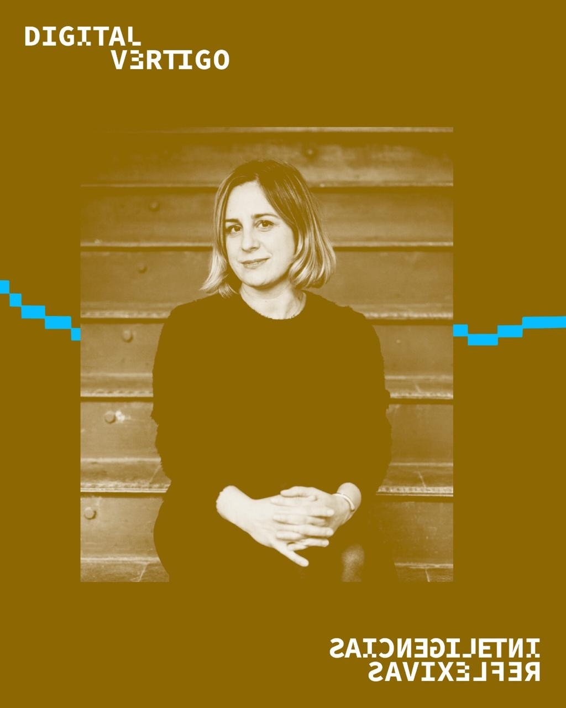
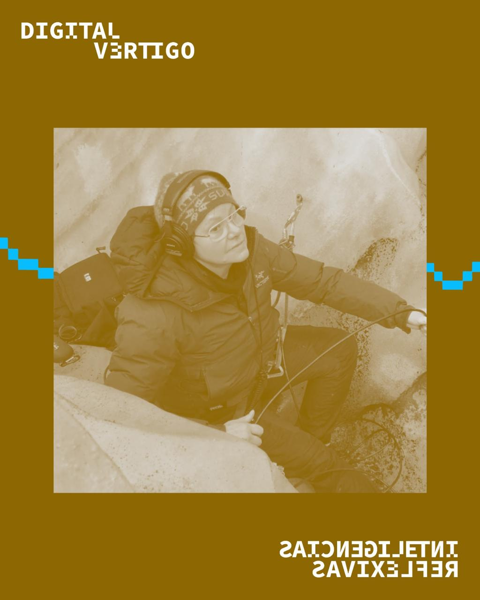
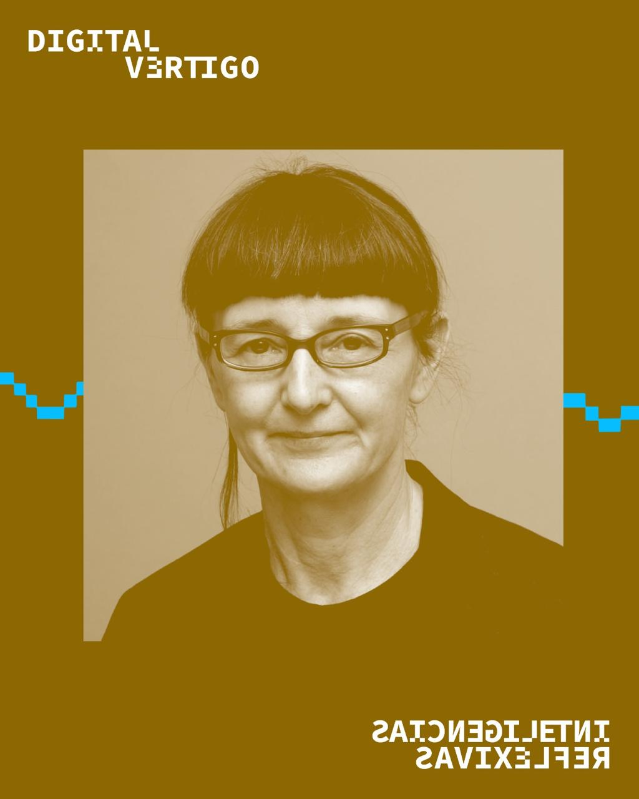
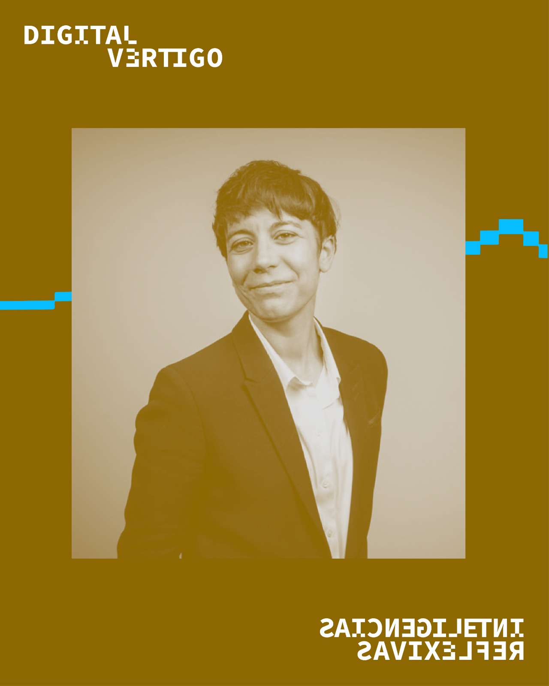
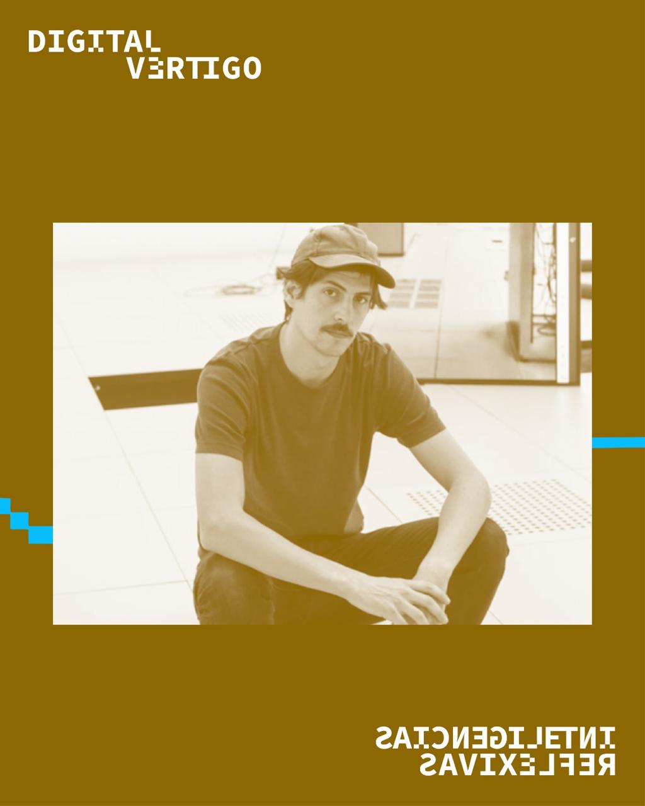
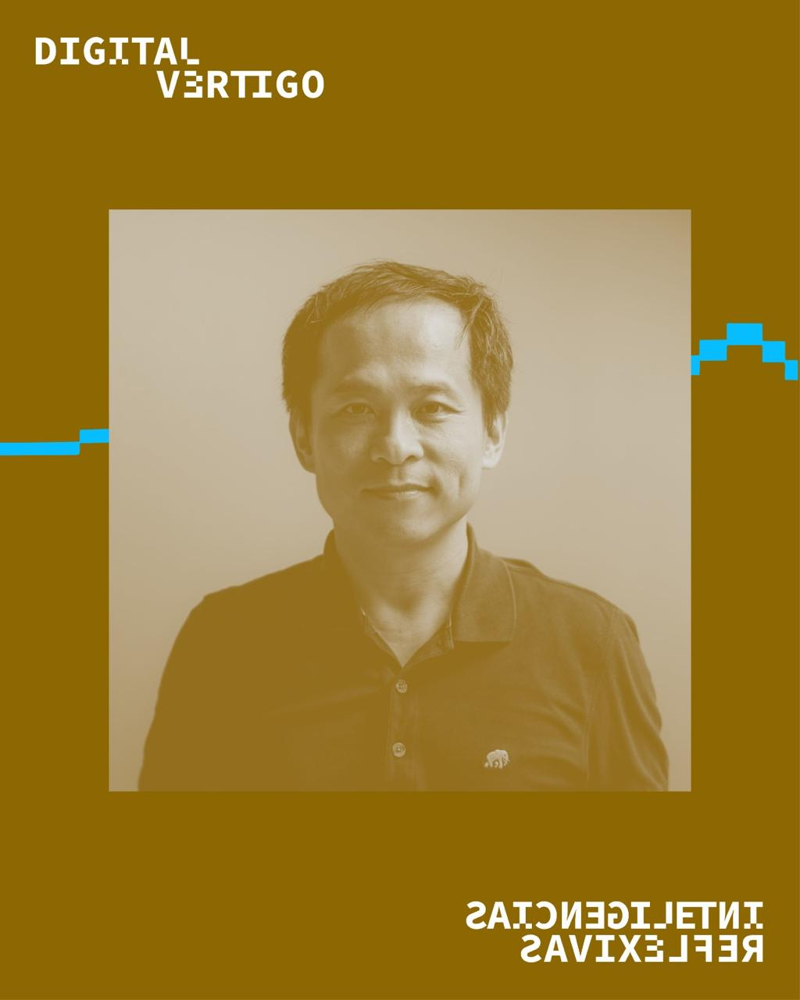
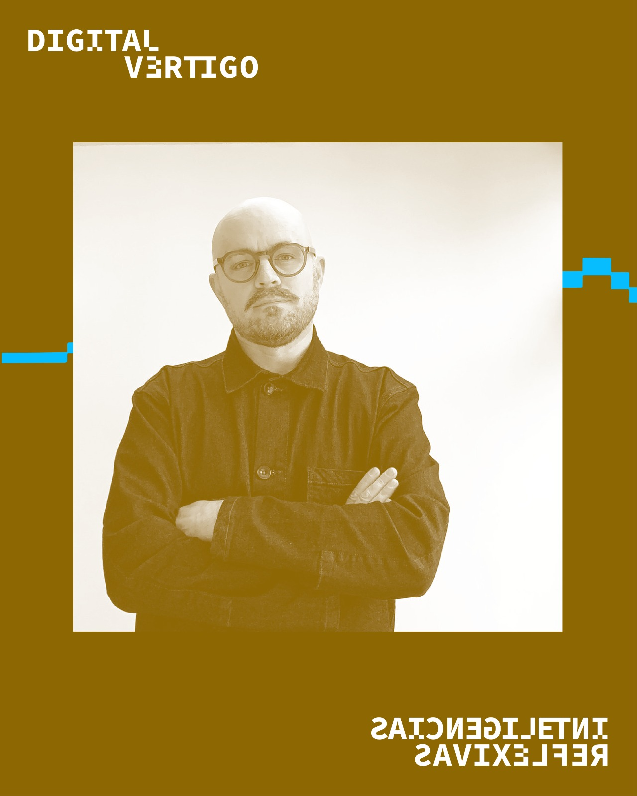
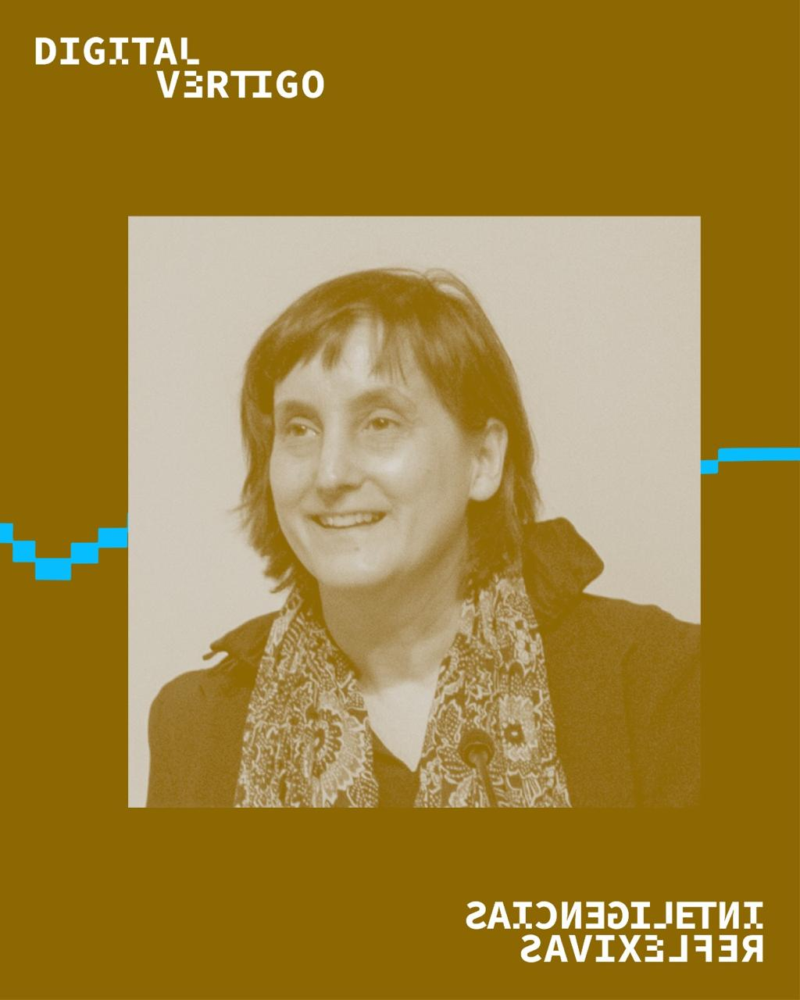
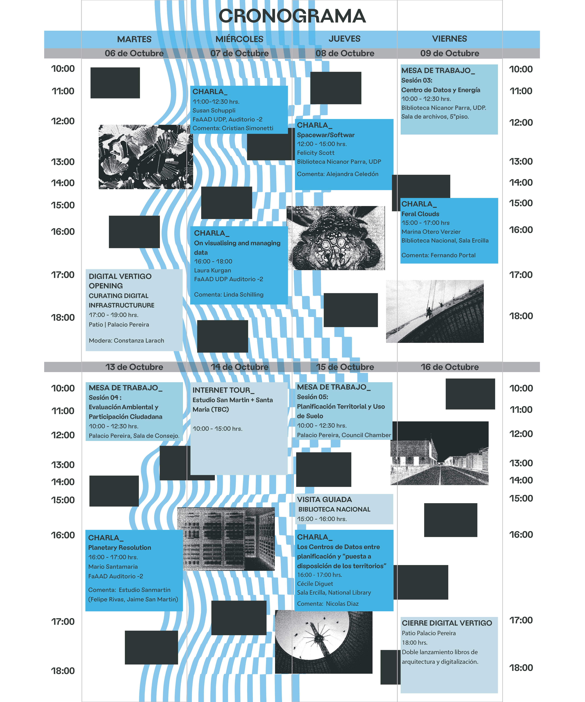

ACERCA DE
Inteligencias Reflexivas es la propuesta curatorial que representa al Pabellón de Chile en la 19° Bienal de Arquitectura de Venecia 2025. En respuesta al llamado internacional “Intelligens. Natural. Artificial. Collective., el proyecto propone un desplazamiento crítico: interrogar el imaginario tecno-optimista y abstracto de la Inteligencia Artificial para situar la mirada en sus condiciones materiales, sus impactos ecológicos y sus urgentes implicancias políticas.
VENICE 2025
Registro fotográfico, audiovisual y clippings de medios internacionales y nacionales.
SANTIAGO 2027
Más información próximamente
ARCHIVO
Research archive, entrevistas, directorio y mapa interactivo de Data Centers.
PRENSA
| Fecha | Fuente | Enlace |
|---|---|---|
| 10 feb 2025 | Ministerio de las Culturas | cultura.gob.cl |
| 13 feb 2025 | GSAPP Columbia University | arch.columbia.edu |
| 17 feb 2025 | ArchDaily (Español) | archdaily.cl |
| 17 feb 2025 | Núcleo FAIR | nucleofair.org |
| 18 feb 2025 | ArchDaily (Inglés) | archdaily.com |
| 3 mar 2025 | FAAD UDP | faad.udp.cl |
| 12 mar 2025 | Radio Duna | duna.cl |
| 14 mar 2025 | Uniandes | arqdis.uniandes.edu.co |
| 25 mar 2025 | Goldsmiths | gold.ac.uk |
| 30 mar 2025 | El Mostrador | elmostrador.cl |
| 7 may 2025 | VeneziaNews | venezianews.it |
| 8 may 2025 | Domusweb | domusweb.it |
| 9 may 2025 | Cultura.gob.cl | cultura.gob.cl |
| 9 may 2025 | El Mostrador | elmostrador.cl |
| 9 may 2025 | El País | elpais.com |
| 9 may 2025 | Designboom | designboom.com |
| 10 may 2025 | Le Monde | lemonde.fr |
| 10 may 2025 | EMOL | emol.com |
| 11 may 2025 | Diario El Heraldo | diarioelheraldo.cl |
| 12 may 2025 | L'Officiel Chile | lofficielchile.com |
| 14 may 2025 | Interni Magazine | internimagazine.com |
| 19 may 2025 | AOA.cl | aoa.cl |
| 23 may 2025 | ArchDaily | archdaily.com |
| 26 may 2025 | Revista Materia | revistamateria.com |
| 29 may 2025 | Palabra Pública | palabrapublica.uchile.cl |
| 22 jun 2025 | El Mercurio | Versión impresa |
| 12 sep 2025 | LaBot | labot.cl |
| 24 oct 2025 | Fundación Arquía | blogfundacion.arquia.es |
| 27 dic 2025 | El País | elpais.com |
EQUIPO
Curaduría
Serena Dambrosio, Nicolás Díaz Bejarano, Linda Schilling Cuellar
Comisario
Cristobal Molina Baeza
Comité asesor científico: Infraestructuras de IA
Marina Otero Verzier; Evidencia material — Susan Schuppli; Espacios institucionales — Alejandra Celedón Forster
Ayudantes de investigación
Tomás Carbonell Vidal, Francisca Luco, Javier Toledo Rodríguez, Miguel Uribe Rubilar, Luna Valdivia, Matías Valenzuela, Francisca Larraín, José Tomás Labbé, Constanza Durán, Magdalena Bertholet
Diseño de exposición: Estudio Pedro Silva (@___e.p.s)
Pedro Silva, Frank Hernández; Diego Alday; Sebastián Valois Hermosilla
Identidad visual y gráfica de exposición: Gaggero Works (@gaggeroworks)
Constanza Gaggero, Amalia Fernández, Alejandra Peralta
Dirección audiovisual
Jaime San Martín, Rafael Guendelman Hales
Producción arquitectónica en Venecia
Alessandra Dal Mos
Colaboradores
Cristóbal Mallea Fuenzalida, Luna Figueroa Maraboli, Vicente Sierra Drolett, Daniel Aguayo Mozó, Laura Reyes, Nathan Humanante Schatz
Prensa
Constanza Almarza
Diseño web
Nathan Humanante Schatz
Impresión 3D: LAT
Laboratorio Arte y Tecnología, Escuela de Arte, Facultad de Artes UC Chile; Laboratorio de Fabricación Digital Fabhaus, Facultad de Arquitectura, Diseño y Estudios Urbanos UC Chile; Escuela de Arquitectura, Universidad Andrés Bello; Facultad de Arquitectura e Ingeniería, Universidad Central; Facultad de Arquitectura, Arte y Diseño, Universidad Diego Portales; Escuela de Arquitectura, Universidad de Las Américas

ACERCA DE
Digital Vértigo es un encuentro internacional e interdisciplinar que reúne a arquitectos, diseñadores, investigadores y teóricos de los estudios de medios para reflexionar críticamente sobre las arquitecturas de la información.
El proyecto funciona como una plataforma pública para interrogar la relación entre las infraestructuras de almacenamiento y los procesos de digitalización del conocimiento, utilizándolos desde una lente strictly material, espacial y ecológica.
CHARLAS MAGISTRALES








PROGRAMA
Cronograma Octubre 2026.


SESIÓN 1
SESIÓN 2
SESIÓN 3
EQUIPO
Curaduría
Serena Dambrosio, Nicolás Díaz Bejarano, Linda Schilling Cuellar
Asistentes
Álvaro Andueza, Fabiana Calderón, Tomás Carbonell, Nathan Humanante, Luna Valdivia
Identidad Visual Original (Inteligencias Reflexivas)
Gaggero Works
Adaptación Identidad Visual Digital Vertigo:
Antonieta López
Diseño web:
Nathan Humanante
Responsable de prensa
Constanza Almarza